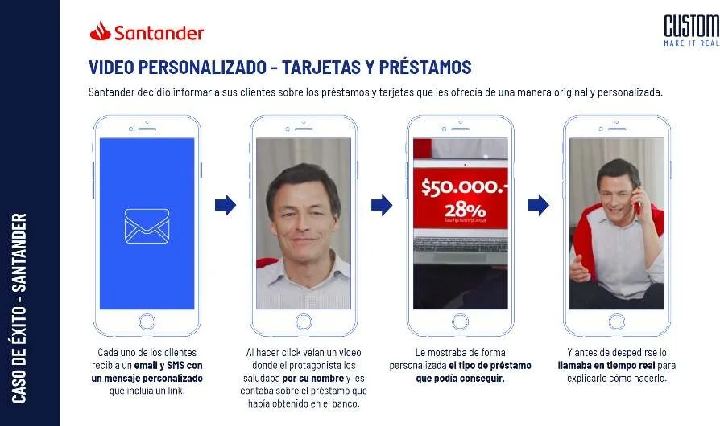

Personalized customer lifecycle at multi-million account scale.
Available for Board & Fractional C-Level Mandates · Frankfurt am Main
Human ideas.
Serious systems.
Board-level advisor and technology officer (CTO / CAIO) designing AI systems since 1996, with 15+ years at the intersection of AI, security, banking, and mass-scale execution. Advised 4 presidential candidates and tier-1 financial institutions across the Americas and Europe.
Board & Advisory Board (Beirat)
Fractional CTO / CAIO / CDO
Strategy & Security Audits
~6 PFLOPS Private AI Compute
Frank (Ezequiel) Escudero · German & Argentine (EU Citizen)
Vertical & horizontal integration: from workshop hardware to cloud AI.
Executive Metrics
15+ Yrs Leadership
40M+ Videos Delivered
180M+ Dynamic Visuals
−94% VoIP Cost Reduction
↘
01 / Institutional & Sovereign Footprint
Tier-1 institutions.
Sovereign campaigns.
Delivering mission-critical personalized video, automated onboarding, and carrier infrastructure across global banks, sovereign campaigns, and enterprise leaders.
Automated communication pipelines & data-driven financial journeys.
High-volume client engagement & secure cross-channel delivery.
Loyalty, onboarding & interactive multimedia flows.
Enterprise-scale client communications & automated rendering.
Interactive digital onboarding & customer retention engines.
Multi-regional financial touchpoints & dynamic video.
High-throughput mobile messaging for mass-market inclusion.
Cloud-native digital neobank acquisition & journeys.
High-value financial lifecycle & asset communication.
Global Brands & Sovereign Engagements:
The Coca-Cola Company · Christmas Platform (6 Yrs, 17 Countries)
4 Presidential Candidates Advised · IT, Data & Comms
Samsung × Netflix · Regional Launch
Scania · Fleet Telematics
Antel · Movistar · Sprint · Carrier Infrastructure
SETOFF / Erasmus+ · European Institutional Research
Selected financial institutions and global enterprises served across Frank’s career in personalized media, telecom infrastructure, and digital systems. Brand names and emblems identify general project sectors; all trademarks belong to their respective owners.
02 / Strategic Architecture
The difference between
advice and execution.
High-stakes systems require someone who commands both the strategic room and the technical reality. No slide-deck filler—real engineering leverage.
Boardroom to bare metal.
Equally at home advising C-suites and institutional leadership on risk, compliance, and governance, or diving into low-level kernel tuning, Proxmox virtualization, and SIP trunks.
Built to survive reality.
Engineered systems serving tens of millions of users without fragile failure modes. 40M+ personalized videos, 20M+ calls, and 180M+ dynamic visual assets delivered.
Software meets physics.
When off-the-shelf tools fail, I build: from autonomous river robotics and workshop hull propulsion to on-premise ~6 PFLOPS agentic-AI compute clusters.
Zero-bloat architecture.
Engineered an annual infrastructure spend reduction from €9M to under €0.5M (>94%), creating immense operational leverage and freeing capital for core innovation.
03 / Interactive Visual Dossier
30 verified artifacts.
One functional view.
Step through 30 verified pictures and short descriptions across banking, autonomous marine hardware, creative scale, and European leadership.

Banking & Scale / Santander
Personalized Video Pipelines at Multi-Million Scale
High-throughput dynamic video rendering engine transforming complex retail and commercial account data into millions of individual video touchpoints.
Case Study · 40 million+ videos delivered (Owner-reported, not independently audited)
-
01 /
Banking & Scale / Santander
Personalized Video Pipelines at Multi-Million Scale
High-throughput dynamic video rendering engine transforming complex retail and commercial account data into millions of individual video touchpoints.
Case Study · 40 million+ videos delivered (Owner-reported, not independently audited) -
02 /
Infrastructure / Enterprise Telephony
Carrier-Grade Telephony & SIP Re-Architecture
Re-engineered high-volume enterprise SIP telephony infrastructure, driving annual spend from €9 million to under €0.5 million (>94% cost reduction).
Infrastructure · €9M to <€0.5M (Owner-reported, not independently audited) -
03 /
Robotics & Hardware / Autonomous Vessel
Drones Navales Autonomous Surface Vessel
Unmanned surface watercraft combining solar endurance, GPS waypoint navigation, and environmental telemetry for river logistics.
R&D · Autonomous watercraft concept -
04 /
Robotics & Hardware / Workshop Prototype
Marine Propulsion & Hull Mechanical Integration
Hands-on workshop fabrication: mounting propulsion engines, drive shafts, couplings, and rudder linkages inside the prototype hull.
Hardware · Physical hull prototype -
05 /
Robotics & Hardware / Embedded Electronics
Autonomous Telemetry & Embedded Guidance Bus
Custom edge controllers, sensor buses, and telemetry transceivers engineered for remote autonomous vessel navigation.
Electronics · Embedded edge telemetry -
06 /
Robotics & Hardware / Marine Simulation
Hydrodynamic & River Navigation Simulation
Hydrodynamic simulation modeling vessel stability, tidal drift, and waypoint routing in coastal and inland waterways.
Simulation · Marine hydrodynamic modeling -
07 /
Studio & Creative / Campaign Craft
Interactive Campaign Physical Production Set
Theatrical studio set with mechanical clockwork built for synchronized multi-channel personalized video and telephony campaigns.
Production · Studio set craft -
08 /
Systems & Infra / Live Telephony
Real-Time Telephony Routing & Telemetry Dashboard
Mission-critical telemetry monitoring thousands of concurrent outbound voice calls and automated personalized responses.
Systems · Live telephony telemetry -
09 /
Creative Scale / Video Synthesis
Automated Dynamic Video Synthesis Pipeline
High-throughput cloud rendering queue generating bespoke personalized video frames at tens of millions of outputs.
Rendering · Automated cloud pipeline -
10 /
Systems & Infra / Core Engineering Hub
High-Density Systems Architecture Workstation
Frank’s multi-display architecture hub for Linux kernel tuning, SIP trunks, Proxmox virtualization, and Kubernetes clusters.
Environment · Systems architecture hub -
11 /
Leadership & Stage / European Keynote
Keynote Advisory: IT Advisor & Tech Expert
Advising institutional leadership, founders, and engineering teams across Europe on AI adoption, systems resilience, and unit economics.
Keynote · Live European stage -
12 /
Leadership & Stage / Founders Ecosystem
Frankfurt Founders & TechQuartier Ecosystem
Representing InkuA and cross-border tech ventures at the Frankfurt International Founders and TechQuartier innovation ecosystem.
Ecosystem · Frankfurt founders summit -
13 /
Leadership & Stage / Brussels Institutions
European Institutional Dialogue in Brussels
Participating in European institutional sessions in Brussels on digital policy, cybersecurity preparedness, and social innovation.
Policy · Brussels institutional chamber -
14 /
Leadership & Stage / European Research
SETOFF European Crisis & Resilience Workshop
Invited speaker on cybersecurity and institutional preparedness at the third SETOFF European workshop in Brussels.
SETOFF · European Commission Erasmus+ -
15 /
Leadership & Stage / Security Panel
Institutional Security & Preparedness Panel
Collaborating with international researchers and civil protection agencies on operational resilience and crisis simulations.
Panel · Security research collaboration -
16 /
Banking & Scale / Santander
Santander Dynamic Customer Messaging Engine
Automated dynamic personalized visual communication pipeline transforming account lifecycle milestones into high-engagement touchpoints.
Fintech · Dynamic financial messaging -
17 /
Banking & Scale / Banco Galicia
Banco Galicia Digital Onboarding Journey
Interactive customer acquisition and credit card onboarding journeys engineered for digital retail banking.
Banking · Interactive onboarding -
18 /
Banking & Scale / Banco Azteca
Banco Azteca Mass-Market Banking Architecture
High-throughput mobile visual communication architecture designed for mass financial inclusion across millions of account holders.
Architecture · High-throughput mobile messaging -
19 /
Banking & Scale / American Express
American Express Member Engagement Flows
Personalized digital invitations and member loyalty communication journeys for premium cardholders.
Payments · Personalized member journey -
20 /
Banking & Scale / Wilobank
Wilobank Cloud-Native Neobank Telemetry
Uptime monitoring, QA pipelines, and cloud infrastructure telemetry for 100% digital neobank banking operations.
Cloud · Neobank telemetry infrastructure -
21 /
AI & Analytics / e-mood SaaS
e-mood Organizational Wellbeing Analytics
B2B SaaS analytics platform visualizing team engagement, pulse metrics, and sentiment trends for distributed companies.
SaaS · People analytics UI -
22 /
AI & Analytics / Data Architecture
e-mood Sentiment Data Pipeline Architecture
Data collection and aggregation pipeline converting lightweight team feedback into executive wellbeing signals.
Product · Wellbeing analytics framework -
23 /
Creative Scale / Live Video Platform
Interactive Nationwide Retail Video Platform
Synchronized desktop and mobile video platform connecting thousands of families through personalized live interactive calls.
Platform · High-scale consumer video -
24 /
AI & Analytics / Developer Masterclasses
Applied AI & Developer Pair-Programming Workshops
Conducting hands-on masterclasses on AI agent workflows, Copilot pairing, and deterministic automation for software teams.
AI Training · Developer masterclasses -
25 /
Leadership & Stage / Digital Skills
InkuA Digital Skills & Talent Acceleration
Civic technology initiative bridging international talent and young developers into tech careers through real-world projects.
Social Impact · Youth technology training -
26 /
Leadership & Stage / Startup Pitch
Global Startup Pitching & Mentorship Sprints
Evaluating and mentoring early-stage technology founders on pitch mechanics, system architecture, and go-to-market execution.
Mentorship · International startup pitch -
27 /
Leadership & Stage / Digital Launch
Cross-Border Digital Publication & Initiatives
Launching international civic technology programs, publications, and open-source learning repositories.
Community · Digital publication milestone -
28 /
Systems & Infra / Team Collaboration
Cross-Functional Engineering Collaboration
Building alongside engineers, designers, and systems architects to turn complex constraints into reliable production reality.
Team · Collaborative engineering sprint -
29 /
Personal / Grounded Discipline
Grounded Perspective Off the Terminal
Recharging outdoors—cultivating the calm discipline, patience, and perspective required to navigate high-stakes systems.
Personal · Grounded discipline -
30 /
Founder & Advisor / Systems Architecture
Strategic Systems Architect & Builder
Frank Escudero: 40M+ personalized videos, >94% infrastructure cost reductions, and mission-critical solutions for tier-1 institutions.
Founder · Strategic systems architecture
04 / Scale & Provenance
Proven numbers.
Verifiable bounds.
Historical results delivered across commercial platforms and enterprise infrastructure.
40M+
personalized videos
180M+
personalized images
>94%
annual VoIP cost reduction*
Career figures reported and confirmed by Frank · October 2026. Not independently audited. Individual project dates are not yet published.
Personalization, at scale.
Millions of outputs · cumulative reported figures
Reported cumulative output; both bars share the same scale.
Less overhead. More room.
Annual VoIP expenditure · € millions
*Reduction calculated from the reported baseline and upper bound: (9 − 0.5) ÷ 9 > 94.4%.
05 / Open Source & Evidence
Verified evidence &
media archive.
Verified photographs, hardware builds, and public documents recorded with exact SHA-256 digests in catalog.json. Search in English or Spanish.
Frankfurt / Ecosystem & Founders
Building across European innovation hubs.
At the Frankfurt International Founders & TechQuartier ecosystem gathering.
Stage / Keynote & Advisory
IT Advisor, Consultant & Tech Expert.
Sharing practical architecture lessons on stage with founders and institutional leaders.
Brussels / Institutional Dialogue
Policy, civic innovation and technology.
Participating in European institutional sessions in Brussels.
R&D / Drones Navales
Autonomous surface vessel concept.
Unmanned river and coastal watercraft designed for logistics and environmental telemetry.
Workshop / Hardware Integration
Propulsion and hull mechanics up close.
Hands-on integration of the internal marine engine, drive shaft, and rudder assembly.
Production / Interactive Campaigns
Physical craft meets automated personalization.
Studio set built for high-volume personalized holiday video and interactive telephony campaigns.
Systems / Telemetry Interface
Telemetry that speaks clearly.
System metrics and node health styled with precision Apple HIG minimalism.
SaaS / People & Sentiment Analytics
e-mood organizational wellbeing dashboard.
Visualizing team engagement, participation, and sentiment across distributed workplaces.
Brussels / June 2023 Workshop
SETOFF European resilience collaboration.
Researchers, practitioners, and speakers at the third SETOFF workshop in Brussels.

Personal / User-supplied photograph
The person, not just the profile.
A favorite companion and a moment away from the screen.
Personal / Outdoors
Grounded perspective off-grid.
Recharging outdoors—where patience and clear signals matter more than screens.
worth
sharing.WORKSHOP / 2023 · PDF ↗
Public Document / June 2023
Cybersecurity in conversation (Press Release).
Official workshop press release documenting Frank’s participation through InkuA.
No matching items. Try “portrait”, “drones”, or “community”.
06 / Direct Mandate Inquiries
Have a high-stakes challenge?
Let’s engineer the solution.
Available for Board & Advisory Board (Beirat) seats, Fractional C-Level roles (CTO / CAIO / CDO), and strategic architecture audits across Europe and the Americas.
Initiate Mandate Dialogue ↗